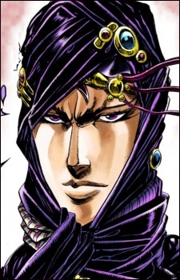

Дата рождения: Около 100,000 до н. э
Возраст: Около 102,000
Раса: Человек из колонны
Пол: Мужской
Национальность: n/a

Карс
Информация
Описание
Карс (カーズ Kāzu?) — это главный антагонист второй части серии Невероятные приключения ДжоДжо, Боевое стремление, а также второй главный антагонист в серии.
Карс — лидер Людей из колонн и создатель Каменной маски. Его главная цель — развиться до уровня высшего существа, чтобы победить разрушительное влияние солнечных лучей. Для этого ему требуется Красный камень Эйша, который может усилить эффект Каменной маски. Чтобы заполучить Камень Эйша, Карс готов на любые жертвы, в том числе на многочисленные убийства владеющих Хамоном.
Как создатель Каменной маски и вампиров в целом, Карс является одним из самых значимых персонажей во вселенной. Его изобретения оказали большое влияние на других ключевых персонажей, таких как Дио Брандо, семья Джостаров и семья Цеппели
Карс — лидер Людей из колонн и создатель Каменной маски. Его главная цель — развиться до уровня высшего существа, чтобы победить разрушительное влияние солнечных лучей. Для этого ему требуется Красный камень Эйша, который может усилить эффект Каменной маски. Чтобы заполучить Камень Эйша, Карс готов на любые жертвы, в том числе на многочисленные убийства владеющих Хамоном.
Как создатель Каменной маски и вампиров в целом, Карс является одним из самых значимых персонажей во вселенной. Его изобретения оказали большое влияние на других ключевых персонажей, таких как Дио Брандо, семья Джостаров и семья Цеппели
Манга
Аниме